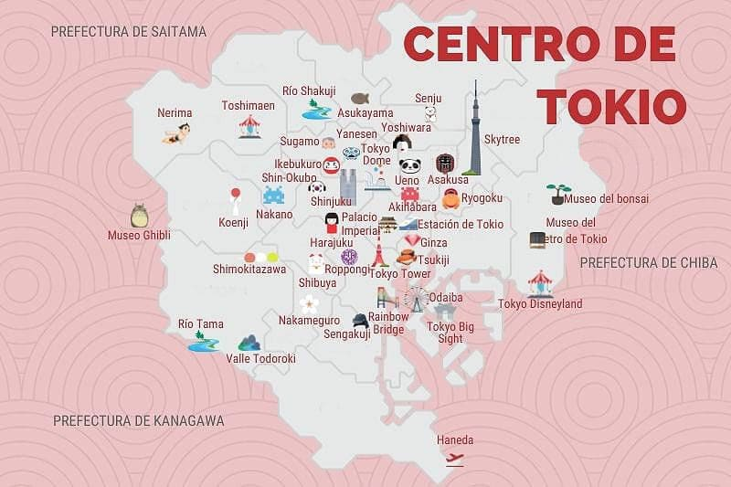

Tokio, la capital de Japón situada en la región de Kanto, es el principal punto de entrada a Japón para el turista y, sin duda, una ciudad casi inabarcable.
La ciudad es inmensa, con casi 14 millones de habitantes en toda la prefectura.
Aunque teniendo en cuenta las prefecturas cercanas, que forman parte del Gran Tokio, la conurbación llega a los 38 millones de habitantes.
Que Tokio sea tan grande es una ventaja, porque es complicado que se te acabe la ciudad. Y
además, siempre vas a tener cosas pendientes que visitar. ¡Así siempre tendrás excusa para volver!
A continuación te damos muchas ideas para disfrutar al máximo de Tokio, distribuidas por zonas.
Comenzamos con la pregunta del millón, porque… ¡qué complicado es responderla! No hay una única respuesta correcta, porque la decisión depende mucho de tus intereses personales y del tiempo disponible en tu viaje a Japón.
Siempre
decimos que en los viajes tienes que investigar antes de cerrar tu itinerario y priorizar aquello que más te llama la atención. Pero sabemos que a veces es necesario una recomendación de mínimo de días, así que vamos a dar una respuesta a
esta cuestión.
Para poder hacerte una idea clara de cómo es la ciudad y todo lo que sus distintos barrios tienen que ofrecer, creemos que son necesarios un mínimo de 4 o 5 días. De esos 4 o 5 días, puedes dedicar un día a hacer alguna excursión
de día desde Tokio, pero no más si quieres tener suficiente tiempo en la capital.
Como verás a continuación, Tokio tiene mucho que ver y hacer y, si haces demasiadas excursiones, tal vez te quedes sin tiempo. Eso sí, como repetimos
siempre, es importante leer la guía y decidir qué cosas quieres ver y qué cosas te dan igual, para ajustar el número de días en Tokio de tu itinerario a tus gustos personales.
Lo mejor para hacer frente a la inmensidad de Tokio es dividir la ciudad en barrios o áreas diferenciadas. A partir de ahí, puedes organizar mejor tu ruta turística diaria y aprovechar al máximo cada día.
En Conociendo Japon hemos
dividido nuestras recomendaciones en las distintas zonas, algunas turísticas y otras de distritos. Por ejemplo, tienes la zona centro de los alrededores del Palacio Imperial, la estación de Tokio y Ginza; la zona norte con los barrios de Ikebukuro,
Ueno, Akihabara y Suidobashi/Iidabashi; la zona noreste con los barrios de Asakusa, Sumida y Ryogoku; la zona sur con Odaiba como destino; la zona oeste con Roppongi y la Torre de Tokio, Shinjuku, Harajuku, Shibuya y Ebisu; y los destinos
más al oeste todavía de Nakano y Mitaka.

Palacio Imperial de Tokio: residencia oficial de la familia imperial, situado en el lugar donde antes se encontraba el antiguo castillo de Edo.

Foso Chidorigafuchi: si vas en época de floración de los cerezos. Uno de los lugares más bonitos para el hanami en Tokio
Santuario Yasukuni, impresionante y controvertido santuario japonés. Si vas en verano, no te pierdas el espectacular Mitama Matsuri.
Estación de Tokio: restaurada en 2014 con montones de tiendas y restaurantes, un hotel de lujo y mucho más. En ella destacamos muchos lugares (tienes más información en el post enlazado) como Tokyo Character Street, una zona dedicada a tiendas de merchandising de personajes de anime y programas de televisión o Tokyo Ramen Street, una zona dedicada a restaurantes especializados en ramen.

Pasear por Yurakucho y maravillarse ante la arquitectura del Tokyo International Forum, al que además puedes ir cuando se organiza un mercadillo.
Dar una vuelta por Ningyocho, para descubrir sus relojes tradicionales y sus pastelerías de antaño.
Antiguo mercado de Tsukiji: que aún tiene tiendas y restaurantes en los que probar muchas delicias. Aquí tendras que pensar si prefieres ir a Tsukiji (ahora que el mercado está cerrado) o ir al nuevo mercado de Toyosu.
Jardines Hama Rikyu: una burbuja de paz en pleno centro de Tokio.

Shiodome y Shinbashi, una zona llena de pasos elevados, terrazas a varios niveles y muchos rascacielos. Aquí está el reloj diseñado por Miyazaki o el interesantísimo Nakagin Capsule Tower, un edificio de apartamentos-cápsula.
Probar la deliciosa comida de tres estrellas Michelin de Ryugin, uno de los mejores restaurantes de la capital.
Pasear por Ginza y ver los maravillosos escaparates de tiendas y restaurantes y disfrutar de la arquitectura (¡y los precios caros!) de las tiendas de marcas conocidas.

Visitar las showrooms de alguna de las marcas más conocidas de equipos fotográficos como Nikon, Sony o Canon.
Tomar una rica (y probablemente cara) tempura en alguno de los restaurantes de altos precios de la zona. Pero si te quieres dar un capricho, es el lugar ideal.
Y si prefieres carne de Kobe, destacamos Bifteck no Kawamura, con carne de calidad excepcional.
Aprovecha el domingo cuando las calles principales son peatonales para dar un bonito paseo y ver Ginza desde otra perspectiva.
Compra KitKat que no encuentras en tiendas en el KitKat Chocolatory, el principal de la marca en Japón, con cafetería incluso.
Llega hasta Yurakucho, con un callejón bajo las vías de la JR repleto de restaurantes de sushi, ramen, etc. Desde aquí, de hecho, puedes andar por Marunouchi o acercarte al Palacio Imperial.

Admirar la maravillosa fachada del rehabilitado teatro Kabuki-za.

Pasear por Ginza y ver los maravillosos escaparates de tiendas y restaurantes y disfrutar de la arquitectura (¡y los precios caros!) de las tiendas de marcas conocidas.
Si eres adicto a los doramas o series de televisión japonesas como nosotros, acércate hasta Ikebukuro Nishiguchi Koen y hazte una foto donde se rodaron escenas del dorama Ikebukuro West Gate Park.
Pasea por las calles cercanas a la estación, repletas de neones, restaurantes, tiendas y mucha gente.

Piérdete en la zona de Sunshine City y visita el acuario Sunshine International Aquarium, el planetario Sunshine Starlight Dome, el showroom de Toyota Amlux o disfruta probando las gyoza del Namco Namja Town.
Pasea por la calle Otome, el «akihabara para chicas» lleno de tiendas de manga para mujeres, cafés de mayordomos para ellas, etc.

Toma el tranvía Sakura Tram y pasea por Otsuka, un barrio con carácter propio que esconde el mejor tantanmen de la ciudad: el del restaurante Nakiryu, con una estrella Michelin.
Pasea por Sugamo, el llamado «Harajuku de las abuelas» para ver los negocios dedicados a la gente mayor, la ropa interior roja y… ¡las pastelerías tradicionales!
Pasea por el parque de Ueno, especialmente para ver los estanques y el templo Benten-do, el Kiyomizu Kannon-do y visitar alguno de los museos del parque. Además, si vas en época de floración de los cerezos, éste es uno de los lugares más populares de Tokio para hacer hanami.

Da un paseo por la calle comercial Ameyoko viendo todo tipo de tiendas de lo más pintorescas.
Acércate caminando hasta Uguisudani a comer yakiniku en uno de sus múltiples restaurantes coreanos y ver su particular zona de los love hotels, un área repleta de love hotels cercana a las vías de la JR.
Pasea por la zona de Yanesen (Yanaka, Nezu y Sendagi), llena de templos y calles comerciales con deliciosa comida callejera.

Visita la zona de Yoshiwara, el antiguo «barrio de placer» de Edo (actual Tokio), que todavía mantiene cierto ambiente de la época.
Pasea por Minami-Senju y Kita-Senju para descubrir lugares de gran importancia histórica poco conocidos por los turistas.
Akihabara es uno de nuestros lugares favoritos de Tokio y sin lugar a duda el paraiso para todo amante del Anime y el Manga, por lo que te recomendamos que te tomes un tiempito y veas cada espacio de esta parte de Tokio
Da un paseo por la calle principal y callejuelas traseras del barrio de Akihabara admirando los neones de grandes tiendas, las tiendas pequeñas que parecen detenidas en la década de 1960, los maid cafés y frikadas varias de las tiendas de merchandising, etc.

Disfruta los domingos a medio día de una perspectiva diferente del barrio, cuando la calle principal se hace peatonal.
Compra alguna cosa de electrónica o de merchandising de manga/anime, para que no se diga, especialmente en alguna máquina gashapon, tan populares en Japón y curiosas para el turista que las ve por primera vez.

Disfruta de uno de los mejores gyukatsu de todo Japón: el gyukatsu de Gyukatsu Ichi Ni San.
Visita el café de las AKB48 y compra merchandising de uno de los grupos de chicas más populares de Japón o el Gundam Café y hazte fotos en la entrada con un Zaku.

Toma algo en la cafetería N3331, situada entre vías del tren y pasea por las tiendas del centro comercial Maach Ecute, situado en una antigua estación.
Visita el centro comercial 2k540 Aki-Oka Artisan que conecta Akihabara con Okachimachi, de camino a Ueno.
Disfruta como un niño de las atracciones y de pasear por Tokyo Dome City. Si puedes, intenta ver un partido de béisbol o un concierto de música en el Tokyo Dome.
Da un paseo por los jardines Koishikawa Korakuen, un diseño del siglo XVII.

Sube al Bunkyo Civic Center, con uno de los miradores gratuitos de Tokio.
Visita la Catedral de Santa María de Tokio, una preciosa obra del arquitecto Tange Kenzo que es la sede de la archidiócesis de Tokio… y descubre todo lo que el distrito de Bunkyo tiene para ofrecer.
Pasea por Kagurazaka, uno de los barrios de geishas todavía en activo en Tokio con muchos callejones empedrados y muy estrechos en los que perderte.

Acércate al templo Senso-ji, famoso por su enorme farolillo colgado en la puerta Kaminarimon.

Compra galletas de arroz sembei y todo tipo de souvenirs tradicionales en la calle comercial Nakamise que va desde la puerta Kaminarimon hasta el templo Senso-ji.
Encuentra farolillos, comida de plástico y material de cocina para restaurantes japoneses en la calle Kappabashi-dori, llena de tiendas para restauración.
Admira el edificio de Asahi Super Dry (el Asahi Beer Hall, conocido por su escultura de color dorado) desde el puente Azuma-bashi.
Si vas en época de floración de los cerezos, pasea por el parque Sumida y disfruta de las preciosas vistas de la torre Tokyo Skytree rodeada de sakura.
Disfruta de un crucero fluvial por el río Sumida que te llevará hasta los jardines Hama Rikyu o hasta Odaiba.
Cruza el puente Azuma-bashi hasta el barrio de Sumida para subir a la la torre Tokyo Skytree.
Visita el estadio Kokugikan, donde se celebran los combates de sumo. Si hay competición, entra a ver unas cuantas luchas y disfruta del espectáculo.

Visita una heya, donde viven y entrenan los luchadores de sumo, por ejemplo la heya Arashiyo.
Come chanko-nabe, el plato más importante en la dieta de un luchador de sumo. Tienes algún restaurante destacado en el mapa.
Come unas de las mejores gyozas de todo Tokio en Kameido, un barrio tradicional con muchos locales y restaurantes.
Pasea por Monzen-Nakacho y Fukagawa, un barrio lleno de artesanía, templos y santuarios sorprendentes y muchas cafeterías.
Disfruta como un niño en el museo teamLab Borderless, el primer museo de arte digital de Tokio.
Contempla la puesta de sol desde la playa artificial de Odaiba y relájate viendo el tiempo pasar y cómo Tokio se va iluminando frente a ti.

Visita la sede de la cadena de televisión Fuji TV, para aprender un poco más sobre sus programas y artistas y para disfrutar de maravillosas vistas de Tokio desde su mirador.
Haz compras en alguno de los múltiples centros comerciales como el Aqua City, el Decks o el DiverCity que expone en su exterior un impresionante Gundam.

Hazte una foto con la réplica de la Estatua de la Libertad, que preside la bahía.
Si viajas con niños, sube a la noria Daikanransha o disfruta de alguna de las múltiples atracciones que ofrece Odaiba como el complejo de exposiciones y entretenimiento Toyota Megaweb.
Si estás en Tokio durante el evento, acércate a Tokyo Big Sight para la feria de anime y manga o para el Comiket, que se celebra dos veces al año.
Llegar o irte de Odaiba en el primer coche de la línea Yurikamome, un tren sin conductor, para disfrutar de las increíbles vistas según cruzas el Rainbow Bridge.
Llegar o irte en uno de los múltiples barcos/cruceros que salen de Asakusa y si quieres disfrutarlo al máximo, quizá reservar un crucero con cena por la bahía de Tokio.
Entra en alguno de los museos de Odaiba como el Miraikan (literalmente, «museo del futuro», es decir, de ciencia e innovación) o el museo de Ciencia Marítima.

Baja las escaleras del precioso camino de torii rojo del santuario Hie de Akasaka, un auténtico oasis en pleno centro de la ciudad.

Visita el fantástico Palacio de Akasaka, la Casa de invitados del Estado en Tokio. Su exterior es de carácter occidental, pero en su interior hay muchos detalles japoneses, una mezcla muy interesante.
Pasea por el cementerio de Aoyama, donde se encuentra enterrado Hachiko junto a su amo.
Especialmente en otoño, disfruta de los árboles ginkgo de la avenida Jingu Gaien.

Hazte la foto típica delante del famoso Roppongi Crossing.

Pasea por el complejo comercial de Roppongi Hills y admira las vistas que desde allí se tienen de la Torre de Tokio.
Sube al mirador Tokyo City View y Sky Deck en la torre Mori, para admirar las mejores vistas de Tokio.
Visita el ondulado y precioso National Art Center Tokyo.
Si te gusta salir por la noche, toma algo con otros extranjeros en alguno de los miles de bares internacionales de Roppongi.
Visita el cercano parque Shiba y el templo Zojoji, situado a los pies de la torre de Tokio, ¡mezcla estupenda de tradición y modernidad!

Si quieres sushi de calidad, disfruta de Sushisho Masa, una espectacular barra de sushi.
Pasea por las calles y callejuelas llenas de neones cercanas a la estación de Shinjuku y acaba en los callejones de la pequeña Golden Gai, una joya en plena Shinjuku.

Sube a los miradores gratuitos del edificio del Gobierno Metropolitano de Tokio y disfrutae de sus vistas de 360º.
Hazte una foto entre las letras de la escultura LOVE, situada entre los rascacielos de Shinjuku.
Da un paseo relajante por el parque de Shinjuku (Shinjuku Gyoen), un pulmón de aire en el centro de la ciudad, especialmente durante la época de los cerezos en flor.
Adéntrate en el barrio rojo de Kabukicho para ver otro Japón con sus love hotels y establecimientos de «entretenimiento adulto».
Cruza Kabukicho para llegar al barrio coreano de Tokio, Shin-Okubo y compra algún producto de belleza o algún artículo del idol coreano de turno. Luego, come en alguno de los múltiples restaurantes coreanos de carne a la parrilla o yakiniku.
Ve algunas de las localizaciones del famoso anime Your Name, varias calles de Shinjuku inspiraron imágenes de la película, así que siéntete como sus protagonistas paseando por Shinjuku.

Visita el santuario más importante de Tokio, el santuario de Meiji y, si tienes suerte (mejor en domingo) verás de una auténtica boda sintoísta.

Adéntrate en la cultura idol, pop y gothic lolita de la calle Takeshita-dori, llena de tiendas con todo tipo de objetos.
Come una típica crepe de Harajuku. Son especialmente populares las de la calle Takeshita con mil frutas e ingredientes, ¡todo un manjar!

Da un paseo relajante por el parque de Shinjuku (Shinjuku Gyoen), un pulmón de aire en el centro de la ciudad, especialmente durante la época de los cerezos en flor.
Da un paseo por la famosa y muy exclusiva calle comercial de Omotesando y alucinarno sólo con los precios de las tiendas de marca sino también con la increíble arquitectura de muchos de sus edificios. Puedes pasear libremente o hacer nuestra ruta por la arquitectura de Omotesando y Aoyama, ¡muy recomendable!
Compra algún muñequito o accesorio kawaii en la tienda Kiddy Land.
Si hace buen tiempo, da un paseo por el parque Yoyogi para ver a los rockabillies bailar.
Cruza el paso de cebra más célebre de todo el mundo o mira cómo la gente lo cruza tomando un café en el Starbucks cercano con amplias cristaleras que dan al centro de la plaza.

Sube a alguno de los múltiples miradores para ver el cruce de Shibuya desde las alturas. En el post de Shibuya los tienes todos.
Hazte una foto con la estatua de Hachiko, el perrito más famoso del mundo entero.

Visita la colina de los love hotels en Dogenzaka y sorpréndete con su arquitectura kitsch, sus neones y su decoración.
Pásate por el NHK StudioPark para saber un poco más de la tele japonesa.
Come sin parar en Hiroo, uno de los barrios más exclusivos y familiares de Tokio.
Visita el templo Sengakuji, donde se encuentran enterrados los 47 ronin junto a su señor, y haz una ofrenda de incienso en sus tumbas.

Pasea por los canales y la historia de Shinagawa… ¡en breve publicaremos un paseo fabuloso por esta zona!

Acércate a Ebisu Garden Place y hazte una foto como Domyouji y Makino del dorama Hana Yori Dango. Y si no eres tan friki como nosotros, simplemente da una vuelta por el centro comercial (especialmente bonito durante las vacaciones de Navidad).
Toma una cerveza Sapporo o Yebisu en el Beer Museum Yebisu mientras aprendes más sobre su fabricación.
Comer una rica hamburguesa en Blacows, una hamburguesería japonesa especializada en hamburguesas de wagyu… ¡deliciosas!
Disfruta de la belleza de los cerezos en flor en Nakameguro, paseando a lo largo del río mientras tomas algo y disfrutas del ambiente.
Toma uno de los bocados más deliciosos y exclusivos de todo Japón: los wagyu sando o katsusando de carne de wagyu en Wagyumafia.
Toma uno de los «pastelitos de Totoro» en la pastelería Shiro-Hige.
Viaja en la línea de tranvía de Setagaya y llega hasta el templo Gotokuji, conocido como el «templo de los maneki-neko«, los gatitos de la suerte.
Pasea por el valle Todoroki, el único valle natural de los 23 distritos de Tokio… ¡un oasis de naturaleza en plena ciudad!

Disfruta de la belleza de los cerezos en flor en Nakameguro, paseando a lo largo del río mientras tomas algo y disfrutas del ambiente.
Toma uno de los bocados más deliciosos y exclusivos de todo Japón: los wagyu sando o katsusando de carne de wagyu en Wagyumafia.
Cualquier momento del año es bueno para visitar Tokio. En ocasiones quizás te obliguen a tomar vacaciones unos días concretos y nuestra filosofía siempre es la misma: mejor ir que no ir, sea cuando sea el momento. Aunque el momento sea en verano, con temperaturas muy altas y una humedad horrible. De todas formas, si te preocupa el clima, te dejamos con esta gráfica para que te hagáis una idea de cómo están las temperaturas y las precipitaciones según la época del año.